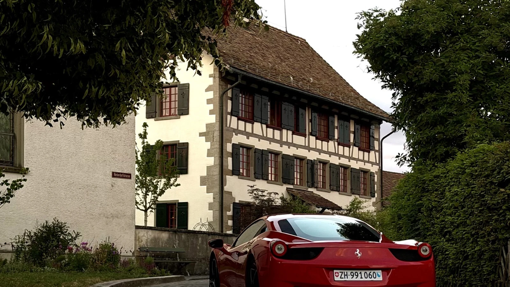
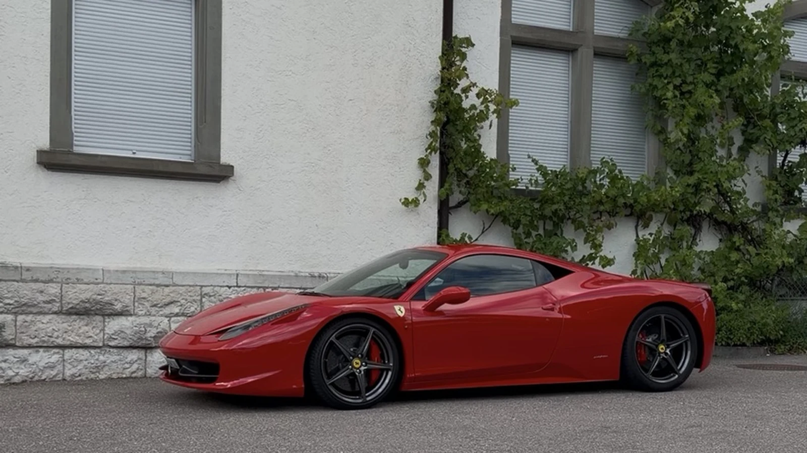

Per il suo compleanno, lei voleva regalargli qualcosa di cui parlava da anni: la possibilità di guidare personalmente una Ferrari aspirata. Il suo desiderio non era legato a un solo modello. Una Ferrari a motore centrale era in cima alla lista, ma lo erano anche le gran turismo V12 a due posti come F12berlinetta e 812 Superfast. La Ferrari 458 Italia era quindi una scelta particolarmente significativa: motore centrale, aspirata e progettata intorno al guidatore.
Ha prenotato la nostra Breve Fuga Unlimited, un pacchetto di tre ore ideale per un giro serale mirato da Nänikon. Durante la telefonata ci ha chiesto alcuni suggerimenti per il percorso. Alla fine hanno scelto il castello di Kyburg: abbastanza vicino da godersi la guida senza fretta, ma sufficientemente speciale da trasformare la serata in una vera occasione.
Una sorpresa di compleanno costruita intorno alla prima guida in Ferrari
Tre ore hanno lasciato alla coppia il tempo per un briefing accurato, un breve test drive, una pausa al castello di Kyburg e un rientro panoramico attraverso l’Oberland zurighese.

17:00. Un’introduzione personale prima che la sorpresa diventi reale
La coppia è arrivata a Nänikon alle 17:00. Poiché era la sua prima esperienza al volante di una supercar, la consegna è stata volutamente tranquilla. Abbiamo presentato la Ferrari 458 Italia, spiegato le principali specifiche e illustrato i comandi utili prima di partire.
Questo comprende cambio e retromarcia, funzioni sul volante, manettino, indicatori di direzione, tergicristalli e le procedure corrette per fermare e parcheggiare l’auto. D’altronde è una sportiva italiana e alcune soluzioni hanno una personalità tutta loro. Conoscerle in anticipo rende i primi chilometri più rilassati e permette di concentrarsi sulla guida invece di cercare un pulsante.
Perché la Ferrari 458 corrispondeva al suo desiderio di compleanno
La 458 è una delle risposte più pure al desiderio di guidare una Ferrari aspirata. Il V8 da 4,5 litri eroga 570 CV, è posizionato dietro gli occupanti e raggiunge 9.000 giri. Nessun turbo interrompe il rapporto diretto tra acceleratore e motore. La risposta è immediata, il suono cresce in modo progressivo e il carattere dell’auto è percepibile anche alle normali velocità stradali.
Dopo l’introduzione abbiamo effettuato insieme un breve test drive. Lo scopo non era mostrare le prestazioni, ma prendere confidenza con visibilità, sterzo, freni, cambio e dimensioni. Alle 17:25 la coppia era pronta a iniziare il proprio itinerario con sicurezza.

Il valore non era semplicemente avere una Ferrari per tre ore. Era il momento in cui un desiderio coltivato da tempo diventava reale — condiviso in coppia, su strade vicine e con il tempo necessario per vivere davvero l’auto.
Un itinerario panoramico in Ferrari da Nänikon al castello di Kyburg
Il castello di Kyburg funziona particolarmente bene come destinazione per un noleggio Ferrari più breve vicino a Zurigo. Il contesto storico dà al giro un punto d’arrivo chiaro, mentre le strade circostanti offrono cambi di ritmo, paesaggi e curve sufficienti a rendere la 458 coinvolgente senza richiedere un itinerario di lunga distanza.
La mappa segue il percorso scelto dai clienti: andata verso il castello di Kyburg, poi Kyburgerbrugg e Oberland zurighese prima del ritorno a Nänikon. Le tappe intermedie sono fissate per evitare che Google Maps sostituisca il giro panoramico con la via diretta più veloce.
Kyburg come destinazione, la guida come vera esperienza
A Kyburg si sono fermati per una pausa e alcune fotografie, prima di proseguire sulle strade panoramiche intorno a Kyburgerbrugg. Il castello ha dato struttura alla serata, ma il ricordo vero è nato tra una sosta e l’altra: il suono del V8, la visuale compatta sui parafanghi anteriori e la sensazione di una Ferrari a motore centrale che cambia direzione.
Sono tornati a Nänikon alle 20:25, entusiasti dell’esperienza. La conclusione è stata immediata: la ripeteranno, la prossima volta con un pacchetto più lungo e il tempo necessario per raggiungere le montagne e percorrere un vero passo svizzero.
Perché un’esperienza di guida Ferrari funziona come regalo di compleanno
Un regalo memorabile deve essere personale. In questo caso la scelta rifletteva un desiderio autentico che lui aveva da anni, mentre percorso e orario hanno permesso di condividerlo in coppia. La Breve Fuga è particolarmente adatta quando il destinatario non ha mai guidato una supercar: abbastanza lunga da superare l’emozione iniziale, ma compatta da organizzare come sorpresa.
Per Luxury Obsession la parte importante non è semplicemente consegnare le chiavi. Contano una partenza tranquilla, una spiegazione chiara dell’auto e un itinerario coerente con il pacchetto. È questo che trasforma un noleggio Ferrari vicino a Zurigo in un’esperienza personale, non in un giro generico.
Organizzare un regalo di compleanno Ferrari vicino a Zurigo
Scopri il nostro buono regalo Ferrari a Zurigo, confronta i pacchetti Ferrari 458 Italia oppure approfondisci il nostro noleggio Ferrari gestito personalmente vicino a Zurigo.
Domande frequenti
La Breve Fuga è adatta come regalo di compleanno Ferrari?
Sì. Tre ore permettono di fare un briefing accurato, un breve test drive e raggiungere una destinazione scenografica vicino a Zurigo, mantenendo il regalo semplice da organizzare.
Perché la Ferrari 458 Italia è speciale come prima esperienza in supercar?
La 458 unisce motore centrale, sterzo immediato, V8 aspirato da 4,5 litri e un carattere progressivo fino a 9.000 giri. Dopo una spiegazione chiara e un breve test drive è spettacolare, ma comprensibile.
Luxury Obsession può consigliare un itinerario da Nänikon?
Sì. Possiamo suggerire percorsi realistici in base alla durata, al traffico e all’atmosfera desiderata. Il castello di Kyburg è un’ottima scelta per un giro serale più breve nella regione di Zurigo.